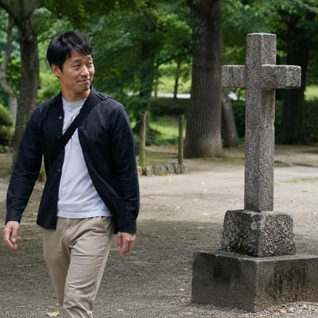

Cuando muchos occidentales piensan en religión, suelen imaginar sociedades profundamente marcadas por el cristianismo, donde conceptos como «pecado», «salvación», «culpa ante Dios» o «vida eterna», forman parte del lenguaje cotidiano. Japón, sin embargo, representa un caso cultural radicalmente distinto. Para millones de japoneses, el cristianismo es solamente una curiosidad histórica y estética, no el eje moral de la sociedad ni la base de la identidad nacional.


Actualmente Japón tiene una población aproximada de 124 a 125 millones de habitantes. Y las estadísticas religiosas son complejas, porque gran parte de la población participa simultáneamente en rituales sintoístas y budistas sin considerarse «religiosa» en sentido estricto. Según datos recientes del gobierno japonés, del Pew Research Center y de estudios demográficos internacionales, alrededor del 48% al 70% de los japoneses participa de prácticas sintoístas, cerca del 46% al 67% mantiene vínculos culturales con el budismo, mientras que el cristianismo apenas ronda entre el 1% y el 2% de la población. Paralelamente, entre un 40% y un 70% de los japoneses se describen como «sin religión» o no afiliados religiosamente.[1]
Este aparente «contraste estadístico» ocurre, porque en Japón la religión no suele entenderse como una afiliación exclusiva y absoluta. Una misma persona puede visitar santuarios sintoístas en Año Nuevo, celebrar funerales budistas y casarse en una ceremonia con estética cristiana, todo ello sin sentir contradicción alguna.
Sin embargo, las religiones históricamente dominantes en Japón son el sintoísmo y el budismo. El sintoísmo es una tradición autóctona japonesa extremadamente antigua, sin fundador, sin dogmas rígidos, y sin un libro sagrado equivalente a la Biblia o al Corán. Se basa en la veneración de los «Kami», entidades espirituales asociadas a fenómenos naturales, lugares, fuerzas de la naturaleza, ancestros y elementos considerados extraordinarios.
Pero traducir «Kami» simplemente como «dioses», resulta engañoso desde la perspectiva occidental. Los Kami no son omnipotentes ni necesariamente perfectos. Tampoco exigen una obediencia absoluta ni funcionan como jueces morales universales. Un Kami puede ser el espíritu de una montaña, de un río, de un bosque, de una tormenta, de un antepasado familiar, o incluso de un personaje histórico admirado.
En la mentalidad sintoísta, la naturaleza no fue creada para el ser humano: el ser humano forma parte de ella. Por eso el sintoísmo desarrolla una relación de respeto ritual con el entorno, más que una relación de sometimiento ante un dios supremo. Y la pureza ritual, la armonía social y el equilibrio con la naturaleza tienen mucho más peso que conceptos occidentales como culpa metafísica o pecado original.
Pero la figura más importante del sintoísmo es Amaterasu, la diosa del sol, vinculada simbólicamente con la familia imperial japonesa. Sin embargo, incluso Amaterasu está lejos del modelo monoteísta absoluto típico de las religiones abrahámicas.
Otra diferencia fundamental es que el sintoísmo no divide el universo entre un bien absolutamente puro y un mal absolutamente perverso. Y las personas no nacen «manchadas por el pecado». Más bien las acciones negativas suelen interpretarse como desequilibrios, impurezas o desarmonías, que pueden corregirse mediante rituales y conductas apropiadas.
Por su parte el budismo, introducido desde China y Corea hace siglos, coexistió con el sintoísmo en lugar de destruirlo. A diferencia del cristianismo, que históricamente tendió a combatir religiones rivales, el budismo japonés terminó fusionándose culturalmente con las prácticas locales. Por ello muchos japoneses viven un sincretismo natural: celebraciones de nacimiento vinculadas al sintoísmo y funerales ligados al budismo.
Lo interesante es que para muchos occidentales resulta sorprendente descubrir que el cristianismo tiene una influencia extremadamente reducida en Japón. Puesto que, en América Latina y Europa, incluso personas no creyentes, viven dentro de sociedades moldeadas profundamente por símbolos, moralidades y tradiciones cristianas. Japón, en cambio, desarrolló su identidad nacional casi completamente fuera de esa influencia.
Aunque el cristianismo llegó con misioneros portugueses en el siglo XVI, pero especialmente con el jesuita español Francisco Javier (1506-1552), las autoridades japonesas pronto comenzaron a ver a esta religión como una amenaza política y cultural asociada al colonialismo europeo. Y durante el shogunato Tokugawa (régimen militar feudal que gobernó Japón entre 1603 y 1868), el cristianismo fue perseguido y permaneció prohibido durante siglos.
Cuando Japón volvió a abrirse al mundo en el siglo XIX, el cristianismo regresó, pero ya era demasiado tarde para competir con tradiciones profundamente arraigadas, y con una cultura que nunca necesitó de doctrinas como el pecado original, la condenación eterna o la salvación mediante un redentor crucificado.
Para muchos japoneses, las religiones occidentales suelen percibirse como sistemas excesivamente dogmáticos, exclusivos y obsesionados con verdades absolutas. La idea de afirmar: «Esta es la única verdad y todos deben aceptarla», choca con una cultura japonesa históricamente más pragmática y menos inclinada al exclusivismo religioso.
Paradójicamente, Japón adoptó numerosos elementos visuales y comerciales del cristianismo, sin adoptar realmente su fe. La Navidad, por ejemplo, es celebrada masivamente como un evento social y romántico, no como una conmemoración religiosa del nacimiento de Jesús. Las luces, los árboles navideños, los regalos y las cenas especiales son populares, especialmente entre jóvenes y parejas. Pues en Japón la Nochebuena suele parecer más una mezcla de cita romántica y campaña comercial, que una festividad espiritual.
Algo similar ocurre con las bodas «cristianas». Muchas parejas japonesas se casan en iglesias decorativas, con vestidos blancos y música coral, aun cuando ninguno de los participantes sea cristiano. Pues para gran parte de la población, estos rituales son vistos principalmente como una experiencia estética occidental elegante y moderna.
En contraste, la Semana Santa apenas tiene presencia social relevante en Japón. Fuera de pequeñas comunidades cristianas, la mayoría de los japoneses conoce muy poco sobre la crucifixión, la resurrección o el significado teológico de esas fechas.
El debate sobre religión en Japón cambió drásticamente tras el crimen contra el ex primer ministro Shinzo Abe en julio de 2022. Ocurrió durante un discurso público en la ciudad de Nara, cometido por Tetsuya Yamagami, quien declaró guardar resentimiento contra la Iglesia de la Unificación, debido a las enormes donaciones económicas que su madre había entregado a esa organización religiosa, dejando a la familia prácticamente arruinada. Aunque Abe no pertenecía formalmente a ese grupo, el atacante creía que el político mantenía vínculos cercanos con la organización[2]. La Iglesia de la Unificación, fundada por Sun Myung Moon y conocida mundialmente por sus bodas masivas, quedó bajo un intenso escrutinio público. Las investigaciones posteriores revelaron prácticas agresivas de captación de donaciones y fuertes presiones psicológicas sobre algunos fieles.
Como consecuencia, Japón endureció considerablemente la supervisión sobre nuevos movimientos religiosos, y abrió un intenso debate legal sobre manipulación psicológica, libertad religiosa y explotación económica de creyentes. El gobierno japonés impulsó nuevas medidas para controlar prácticas abusivas relacionadas con donaciones excesivas. Y actualmente existen mecanismos legales más estrictos para proteger a las familias de presiones económicas ejercidas por ciertos grupos religiosos, especialmente cuando las contribuciones ponen en peligro la estabilidad financiera de las personas.
Pero quizá uno de los aspectos más interesantes del caso japonés, es que este país suele figurar entre las sociedades más disciplinadas, organizadas y seguras del planeta, pese a que gran parte de su población no cree en doctrinas típicamente cristianas, como el pecado original, la condenación eterna o un juicio divino final. Los japoneses son un pueblo sin infierno. La convivencia social japonesa parece sostenerse mucho más en la responsabilidad colectiva, la presión social, el respeto comunitario y la educación cívica, que en el temor a castigos sobrenaturales.
Esto suele sorprender profundamente a muchos occidentales educados bajo la idea de que la moral depende necesariamente de la religión. Pero Japón demuestra que una sociedad altamente funcional puede desarrollarse con una religiosidad difusa, flexible y profundamente distinta del modelo dogmático dominante en Occidente.
[Godless Freeman]
Comentarios
Comments powered by Disqus